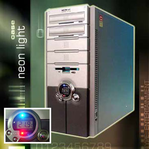

Pc’tje komt zo…
zaterdag 29 maart 2003 | Nerdisme
Zoals ik een paar weken terug schreef, werd het iets te warm voor mijn oude processor. Het heeft dan ook even geduurd, maar nu is de bestelling voor mijn nieuwe levensgezel onherroepelijk de deur uit! Met een wat extravagantere behuizing betreed ik voor het eerst de wereld van ‘casemodding’ (de nerdistische vorm van cartuning). Het moest deze keer allemaal wat aangenaam blijven voor oog en oor. Nu ik verhuis kom ik namelijk in de living terecht met mijn attributen.
- Colorcase Neonlight Silver (details)
- AMD Athlon XP 2600+ (333MHz FSB)
- Zalman processorkoeler
- MSI KT4 Ultra moederbord (LAN, sound, Firewire, USB 2.0, …)
- Enermax ‘Silent’ voeding 350Watt
- 1 Gig DDR PC333mhz Apacer
- Seagate 80Gb Barracuda V (7200 RPM, 8 MB)
- Matrox G550 (Dualscreen)
- setje ‘rounded cables’
- Twee schermen, plextor, dvd en tv-kaart rip ik uit de oude.
Let it come!

Sir Psycho op 29 maart 2003
Amai, zaligen bak :)